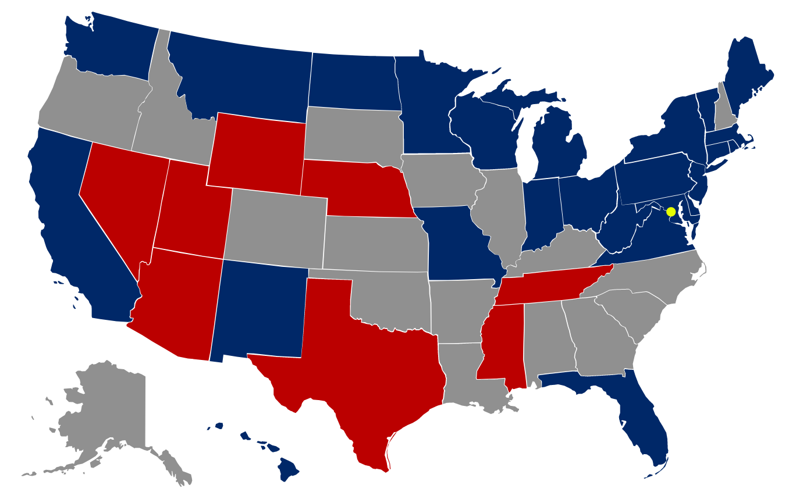

random thing because you're not working
MAKE A DIFFERENCE.

FIND OUT MORE.

random thing because you're not working
MAKE A DIFFERENCE.
FIND OUT MORE.
Want to be heard? Get Active.
Learn more about the midterm elections and the upcoming races in your state above.
Register now. 